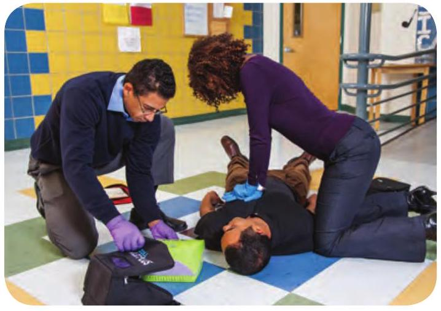
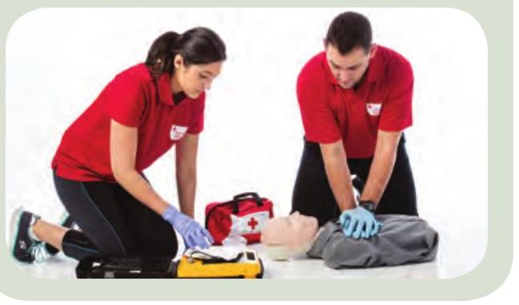
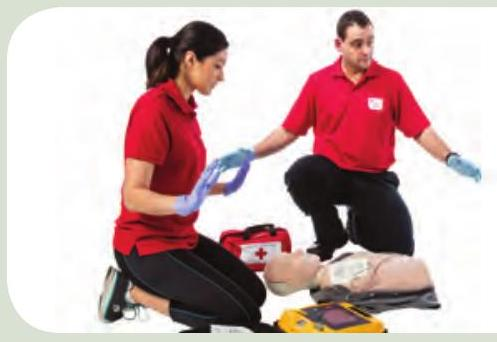

6 CPR and AED
Cardiopulmonary Resuscitation (CPR)
CPR is used when a person is unresponsive and not breathing.
Call
Have someone call EMS/9-1-1 and get an AED.
Adult
If you are alone, call EMS/9-1-1 and get an AED yourself.
Child or Baby
If you are alone, do 5 cycles (2 minutes) of CPR before taking the child or baby with you to call EMS/9-1-1 and get an AED.
Compression-Only CPR
Compression-only CPR uses chest compressions (without rescue breaths) to pump the heart. If you are unwilling or unable to give rescue breaths for any reason, compression-only CPR is acceptable. Traditional CPR with rescue breaths is the recommended method of care for children and babies.
Adult or Child CPR
-
Do 30 chest compressions:
- Put 2 hands in the centre of the person's chest.
- Push deeply and steadily, allowing the chest to recoil between compressions.

-
Give 2 breaths:
- Open the airway.
- Place your barrier device over the person's mouth and nose, and if using a flat plastic shield, pinch the person's nostrils.
- Give just enough air to make the chest start to rise.
- If both breaths go in, repeat the cycle of 30 compressions and 2 breaths.
Baby (Less Than 1 Year)
-
Do 30 chest compressions:
- Put 2 fingers in the centre of the baby's chest, just below the nipple line.
- Push deeply and steadily, allowing the chest to recoil between compressions.

-
Give 2 breaths:
- Open the airway.
- Place your barrier device over the baby's mouth and nose.
- Give just enough air to make the chest start to rise.

- If both breaths go in, repeat the cycle of 30 compressions and 2 breaths.
CPR Guidelines
CPR Compression Depth

Once you begin CPR, continue until:
- EMS personnel or another person takes over.
- You are too tired to continue.
- The scene becomes unsafe.
- You notice an obvious sign of life, such as movement.
What to Do If the Rescue Breaths Don't Go In

If the chest does not rise after the first breath, try repositioning the head. If that doesn't work, look in the person's mouth for an object. Continue to look into the person's mouth after each set of compressions until the airway is clear. Once the rescue breaths go in, continue CPR normally.
Automated External Defibrillation (AED)
Whenever you give CPR, you should also use an automated external defibrillator (AED). While CPR can help prevent brain damage and death by keeping oxygenated blood moving throughout the body, an AED can correct the underlying problem for some people who go into sudden cardiac arrest.
Using an AED
- Open and turn on the AED. 
-
Apply the AED pads:
- Remove any clothing, jewellery, and medical patches that could interfere with pad placement.
- If the chest is wet, dry the skin.
- Place the pads at least 2.5 cm (1 in.) away from a pacemaker.

- Follow the AED's automated prompts.
- If the AED prompts you to do so, ensure that no one is touching the person and deliver a shock. 
-
Continue CPR, starting with compressions.